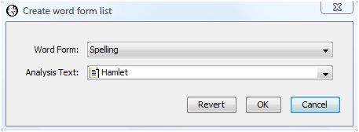
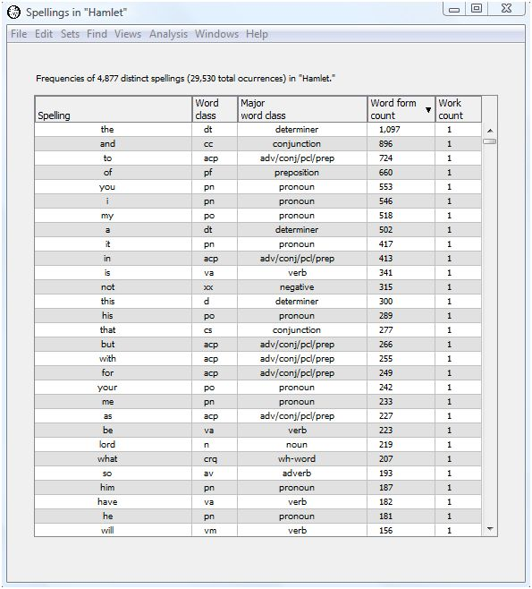
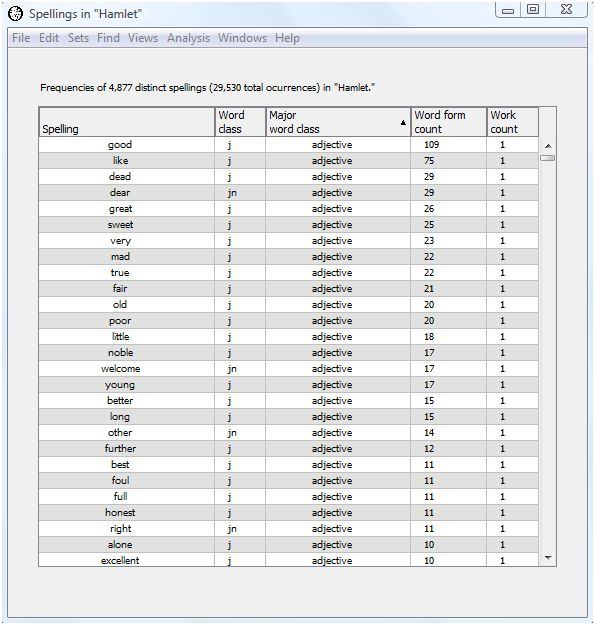
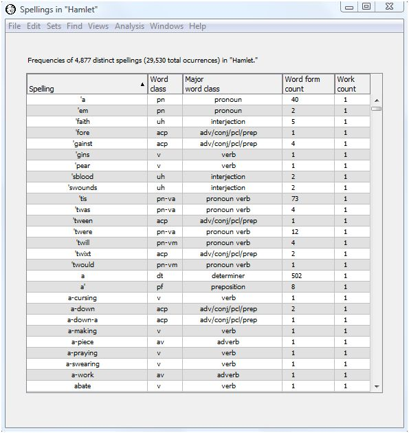
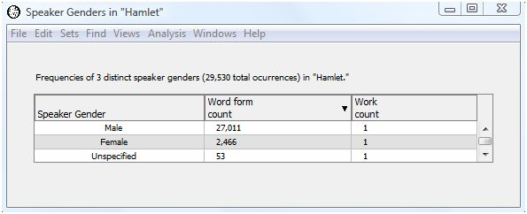

|
|
|
You can create a word form list or lexicon to list all the word forms in a specified analysis text. To create the word form list, select "Create word form list" from the "Analysis" menu.

Select the word form for which to display a lexicon from the drop-down list. You may choose:
We have chosen "Spelling" as the word form of interest in the sample dialog above.
Next, select the analysis text from the drop-down list. You may choose any available work, work set, word set, or corpus. We have chosen Shakespeare's play "Hamlet" in the sample dialog above. Press the "OK" button to produce a lexicon of the spellings in Hamlet.
The resulting output table displays the rows sorted in descending order by word count. For spellings and lemmata, each row displays the word form with a second column displaying its word classes. A spelling may have more than one word class if it is a contraction or other compound word form.
The output table contains a column for major word class when you select spelling, lemma, or word class as the word form. The major word class column does not appear for the other word forms.

A quick glance at the spellings in Hamlet shows no big surprises. There are 4,877 distinct spellings (ignoring case and diacritical marks) among the 29,530 total words in Hamlet. The most frequent words "the," "and," "to," "of," "you," and "I" could be expected to be among the most frequent in modern texts as well. As we'll see later, looking at the relative counts between two texts is usually more informative.
You may want to see the words which occur most frequently for each major word class. Click on the column header for major word class. The output now appears sorted in ascending order by major word class, and then by descending word frequency within each major word class.

To see some examples of words with more than one word class, click the header for the "Spelling" column to sort the words in ascending alphanumeric order. This brings a number of contracted word forms beginning with an apostrophe to the top of the display. Most of these are rarely used in modern English but were common in Shakespeare's time.

The spelling 'twas is a contraction for "it was." The spelling "it" has the word class "pn" for personal pronoun, while "was" has the word class "va" for auxiliary verb. The corresponding major word classes are pronoun for "it" and verb for "was." The spelling 'twill, a contraction for "it will", has the same two major word classes, but the verb "will" has the word class "vm" for modal verb.
Let's look at the counts broken down by gender. Select create word list from the Analysis menu and choose "Speaker Gender" instead of "Spelling" as the word form. Press OK to generate the following output.

Males speak almost eleven times as many words in Hamlet as females. Again, this leads us to wonder if this ratio is significantly different from Shakespeare as a whole, or from the other Shakespearean tragedies. We can use the compare words items in the Analysis menu to answer this question.
|
|
|